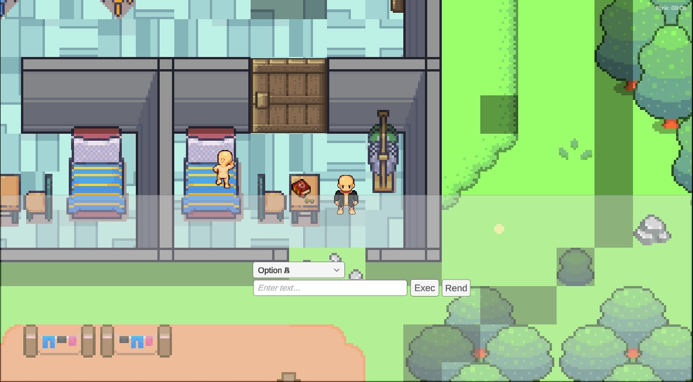

Developer Portfolio
CNC Application Developer
Mikrosam
- Developed a CNC-based keyboard utilizing Microchip PIC controllers.
- Developed CNC software for laser engraving control, featuring a user interface, image filtering, and integration with Galil motion controllers.
- Designed prototype software for image recognition and the operation of a 3DOF robotic hand for part manipulation.
Software Developer
Megasoft
- Developed a website for a government agency promoting agricultural development using ASP and Ajax technologies.
- Implemented interactive multilingual Flash-based maps with XML integration for local administration units.
- Created a framework to expedite the development of financial software solutions.
- Developed an application to manage user roles and privileges across various software modules.
IT Specialist for Internal Software
T-COM
- Spearheaded web development and statistical analysis projects.
Developer, Consultant, Team Lead, Project Manager
Upwork (formerly oDesk)
- Achieved Top 25 Web Developer recognition (August 2009) and Top 25 Software Developer (March 2010).
- Completed 8,485 hours and 143 jobs with an impressive client feedback score of over 4.5/5 on 138 projects, maintaining a 94% success rate.
- Led the development of various projects, including websites, widgets, games, GIS applications, Flight Radar systems, Flight Crew Schedulers, mobile applications, and more.
Personal Projects
Colt JS AS
Winning demo on contest of presenting COLT runtime dev tool. Adobe Flash and Starling JS version.
Demo
codeorchestra
Input Mapper
Run time input mapping from joystics,gamepads, WIImote and others. High level apis for drivers and profiles creating
Sequencer
Designed a drag-and-drop interface to create sequences for video, audio, and logic, featuring timeline scrubbing, Unity event handling, and reusable sequence assets.
DemoLogic Forge
Run-time design with WYSIWYG editing, smart nodes for streamlined
workflows, AI automation, hot reload scripting, and advanced debugging
tools.
Visit Logic Forge
Tech Lead & Software Architect
Modirum Platforms (formerly ITGMA)
-
Spearheaded the architecture and transformation of Virgin Telecom’s core business processes, including Activation, Termination, SIM Replacement, and Owner Change, ensuring robust, scalable, and highly available systems that supported critical operations.
Designed and led the adoption of cloud-native solutions using OpenShift and Kubernetes, enabling scalable, efficient infrastructure with automated deployment pipelines. Orchestrated the CI/CD strategy with Jenkins, driving significant improvements in time-to-market and operational efficiency across multiple environments.
Championed business process automation by architects and optimizing workflows using JBPM, introducing innovative features such as type-safe variables, error handling, and JSON-driven UI automation. This led to improved process agility, transparency, and fault tolerance, directly contributing to enhanced operational performance.
Drove data access performance by extending Hibernate with advanced query capabilities and architects a custom QueryDSL-inspired framework, enabling dynamic, type-safe access to complex datasets. Enhanced Spring Boot services with custom interceptors, improving observability and modularity across microservices.
Architected and integrated SOAP/REST APIs that seamlessly connected internal systems and external partners, ensuring high-performance, secure communication across the enterprise ecosystem.
Collaborated closely with business stakeholders to align architecture with strategic goals, delivering high-impact solutions that supported both short-term business needs and long-term growth. Led continuous optimization initiatives, driving operational efficiencies and innovation across the technology stack.
- Implemented a JSON query framework (Regular Expression, JSONPatch, Evaluator Shunning BackPropagation) and custom Java query framework similar to QueryDSL.
Personal Projects
Sentient - AI NPC System
Developed an AI Agentic system in Unity where NPCs operate based on basic
needs, traits, memory, relations and dynamic behavior within a custom MVC framework,
featuring full event-based interactions and visual customization.

RAG
RAG based on SQLite, uSearch vector DB and nomic-embed-text-v1.5-GGUF, and grounding with ollama LLama 3.1.
Events Forge
Efficient, intuitive, productive, high-performing, shareable across scenes and projects.
Say goodbye to Signals, C# , Unity , UI , Animator , Timeline events...
One solution to rule them all.
Visit Events Forge
System/Solution Architect
National Bank of the Republic of Macedonia
- I'm playing central role in the design and architectural development of ISIDORA — an integrated information system for data reporting and analysis — ensuring its scalability, interoperability, and compliance with evolving regulatory frameworks. Building upon this foundation, my future work focuses on the integration of Generative AI systems to further enhance analytical depth, automate insight generation, and support advanced, data-driven decision-making within the financial ecosystem. NL2SQL Chatbot — System Overview Designed and implemented a robust, enterprise-grade NL2SQL chatbot in Macedonian, functioning as a full-fledged analytical and reporting platform. Engineered for scalability, security, performance, and maintainability with enterprise-grade standards. Core Components & Technologies 1. AI / LLM Built on Microsoft.Extensions.AI and AutoGen.NET, integrating custom LLMs into .NET workflows. Agentic architecture enables SQL, Reporting, and Memory agents to coordinate dynamically via JSON-configurable workflows. Planned drag-and-drop workflow designer for visual orchestration. 2. NL2SQL Converts Macedonian natural-language queries into validated SQL. Uses RAG for schema-aware, hallucination-resistant generation grounded in live database schema and metadata. 3. Memory & Personalization Agentic memory stores user preferences, context, and interaction history, enabling tailored responses and follow-up refinement. 4. Data Storage & Query MS SQL Server handles structured data, dynamic schema introspection, and optimized query execution. 5. Web Interface & Reporting ASP.NET Core MVC generates live dashboards, tables, charts, and AI-driven extremum analyses with human-readable insights. 6. Security & Scalability RBAC, SQL safety validation, caching, asynchronous agent workflows, connection pooling, and stateless front-end servers enable high performance, horizontal scaling, and secure op. 7. Deployment Containerized for Azure, with CI/CD via TFS
Personal Projects
Chat Forge
-
Chat and agentic app in Unity UI, based on Microsoft.Extensions.AI,
Microsoft.AutoGen.Core,Microsoft.AutoGen.Contracts